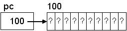
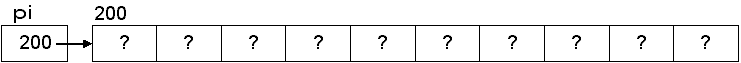
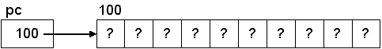
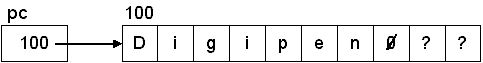
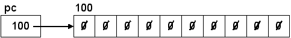
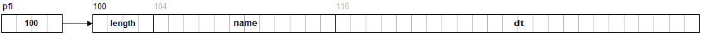

Dynamic Memory Allocation
Up until now, all memory allocation has been static or automaticTo use malloc and free:void *malloc(size_t size); /* Allocate a block of memory */ void free(void *pointer); /* Deallocate a block of memory */
The argument to malloc is the number of bytes to allocate:#include <stdlib.h> /* malloc, free */
char *pc = malloc(10); /* allocate memory for 10 chars */ int *pi = malloc(40); /* allocate memory for 10 ints */
| 10 chars (10 bytes) | 10 ints (40 bytes) |
|---|---|
 |
 |
Notice that there is no type information associated with malloc, so the return from malloc may need to be cast to the correct type:
/* Casting the return from malloc to the proper type */ char *pc = (char *) malloc(10); /* allocate memory for 10 chars */ int *pi = (int *) malloc(40); /* allocate memory for 10 ints */
You should never hard-code the size of the data types, since they may change. Do this instead:Note: The original version of malloc (from K&R C) returned a char * and so the returned pointed had to be cast to the correct type. Newer ANSI C compilers have malloc returning a void * pointer so the cast is not necessary in C. The cast is required in C++, however.
If the allocation fails, NULL is returned so you should check the pointer after calling malloc./* Proper memory allocation for 10 chars */ char *pc = (char *) malloc(10 * sizeof(char)); /* Proper memory allocation for 10 ints */ int *pi = (int *) malloc(10 * sizeof(int));
/* Allocate some memory for a string */
char *pc = (char *) malloc(10 * sizeof(char));
/* If the memory allocation was successful */
if (pc != NULL)
{
strcpy(pc, "Digipen"); /* Copy some text into the memory */
printf("%s\n", pc); /* Print out the text */
free(pc); /* Release the memory */
}
else
printf("Memory allocation failed!\n");
| After allocation | After strcpy |
|---|---|
 |
 |
void *calloc(size_t num, size_t size); /* Allocates memory and sets all bytes to 0 */
/* Allocate and initialize 10 chars to 0 */ char *pc = (char *) calloc(10, sizeof(char));After calling calloc:
int main(void)
{
int SIZE = 10;
int *pi;
/* allocate memory */
pi = (int *)malloc(SIZE * sizeof(int));
/* check for valid pointer */
if (!pi)
{
printf("Failed to allocate memory.\n");
return -1;
}
/* do stuff */
/* free memory */
free(pi);
return 0;
}
void test_malloc(void)
{
int SIZE = 10;
int i, *pi;
/* allocate memory */
pi = (int *)malloc(SIZE * sizeof(int));
/* check for valid pointer */
if (!pi)
{
printf("Failed to allocate memory.\n");
return;
}
/* using pointer notation */
for (i = 0; i < SIZE; i++)
*(pi + i) = i;
/* using subscripting */
for (i = 0; i < SIZE; i++)
pi[i] = i;
for (i = 0; i < SIZE; i++)
printf("%i \n", *(pi + i));
/* free memory */
free(pi);
}
Note: By now it should be clear why we learned that pointers can be used to access array elements. With dynamic memory allocation, there are no named arrays, just pointers to contiguous (array-like) memory and pointers must be used.
Dynamically Allocated Structures
Revisiting our FILEINFO example:#define MAX_PATH 12
Function to print a single FILEINFO structure:
struct DATE { int month; int day; int year; };struct TIME { int hours; int minutes; int seconds; };struct DATETIME { struct DATE date; struct TIME time; };struct FILEINFO { int length; char name[MAX_PATH]; struct DATETIME dt; };
void PrintFileInfo(const struct FILEINFO *fi)
{
printf("Name: %s\n", fi->name);
printf("Size: %i\n", fi->length);
printf("Time: %2i:%02i:%02i\n", fi->dt.time.hours, fi->dt.time.minutes, fi->dt.time.seconds);
printf("Date: %i/%i/%i\n", fi->dt.date.month, fi->dt.date.day, fi->dt.date.year);
}
Dynamically allocate a FILEINFO structure and print it:
void f14(void)
{
/* Pointer to a FILEINFO struct (The 1 is redundant but instructive) */
struct FILEINFO *pfi = (struct FILEINFO *)malloc(1 * sizeof(struct FILEINFO));
/* Check that the allocation succeeded */
/* Set the fields of the struct .... */
PrintFileInfo(pfi); /* Print the fields */
free(pfi); /* Free the memory */
}

void PrintFileInfos(const struct FILEINFO *records, int count)
{
int i;
for (i = 0; i < count; i++)
PrintFileInfo(records++); /* Code reuse! */
}
/* Use array notation instead of pointer notation */
void PrintFileInfos(const struct FILEINFO records[], int count)
{
. . .
}
|
Output:
Name: foo-1.txt Size: 0 Time: 0:00:00 Date: 12/1/2019 Name: foo-2.txt Size: 0 Time: 0:00:00 Date: 12/2/2019 Name: foo-3.txt Size: 0 Time: 0:00:00 Date: 12/3/2019 Name: foo-4.txt Size: 0 Time: 0:00:00 Date: 12/4/2019 Name: foo-5.txt Size: 0 Time: 0:00:00 Date: 12/5/2019 Name: foo-6.txt Size: 0 Time: 0:00:00 Date: 12/6/2019 Name: foo-7.txt Size: 0 Time: 0:00:00 Date: 12/7/2019 Name: foo-8.txt Size: 0 Time: 0:00:00 Date: 12/8/2019 Name: foo-9.txt Size: 0 Time: 0:00:00 Date: 12/9/2019 Name: foo-10.txt Size: 0 Time: 0:00:00 Date: 12/10/2019 |
Quick pointer arithmetic review.
Note:
/* Print info */
PrintFileInfos(saved, SIZE);
/* Release the memory */
free(saved);
A Brief Look At realloc
What happens if the block of memory that was allocated was too small? This is a problem that happens often. Consider this code:
void f0(void)
{
char *p1 = malloc(1000);
char *p2;
/* put some values into the memory */
/* oops, should have allocated more */
p2 = malloc(2000); /* allocate a bigger block */
memcpy(p2, p1, sizeof(char)); /* copy over existing data */
free(p1); /* free the old memory */
/* do something with new memory */
free(p2);
}
Here is the prototype:
On its surface, that sounds great. However, in practice, it generally doesn't work when growing the block. I'm showing you this so that, sometime in the future, you may find that you need this possible behavior. Examples are worth a 1000 words.void *realloc(void *ptr, size_t size);
Note: I've purposely left out the calls to free in the code below. Don't do that in real code! (Also, the addresses will change with each run.)
Example 1 (grow):
void f1(void)
{
char *p1 = malloc(1000);
char *p2;
printf("%p\n", (void *)p1); /* 0x1c78010 */
p2 = realloc(p1, 2000); /* grow the block */
printf("%p\n", (void *)p2); /* 0x1c78010 (same) */
}
void f2(void)
{
char *p1 = malloc(1000);
char *p2;
printf("%p\n", (void *)p1); /* 0x1da5010 */
malloc(10); /* any arbitrary allocation */
p2 = realloc(p1, 2000); /* grow the block */
printf("%p\n", (void *)p2); /* 0x1da5420 (different) */
}
void f3(void)
{
char *p1 = malloc(1000);
char *p2;
printf("%p\n", (void *)p1); /* 0x122a010 */
malloc(10); /* any arbitrary allocation */
p2 = realloc(p1, 200); /* shrink the block */
printf("%p\n", (void *)p2); /* 0x122a010 (same) */
}
void f4(void)
{
char *p1 = malloc(1000);
char *p2;
printf("%p\n", (void *)p1); /* 0x92b010 */
strdup("hello"); /* call arbitrary function */
p2 = realloc(p1, 2000); /* grow the block */
printf("%p\n", (void *)p2); /* 0x92b420 (different!) */
}
The reason I wanted to show this is because beginning programmers often look at the realloc function without really understanding how it works and think that it's a panacea for growing (extending) a block of memory. It isn't, but it does have it's uses, if you know what to expect.
Summary
Summary for malloc/callocvoid free(void *pointer);